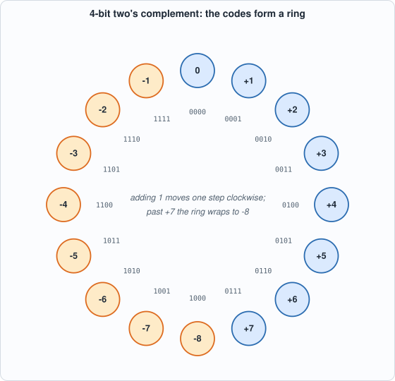
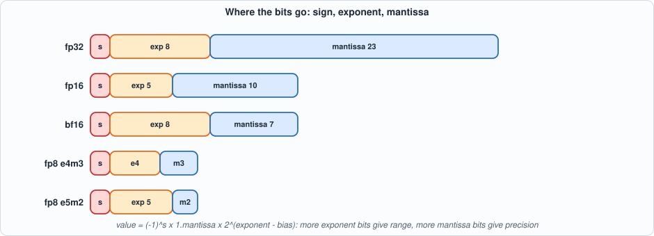

Appendix C. Number Formats¶
About the animals in this picture and where they are standing
- Siberian ibex (Capra sibirica) lives in the high mountains of Central Asia, from the Altai and Tian Shan to the Himalaya. It is one of the largest ibexes, and the males' ridged horns can exceed a metre in length.
- Walia ibex (Capra walie) lives nowhere but the Simien Mountains of northern Ethiopia, on high cliffs. It is endangered, with only a few hundred animals remaining, and is protected within the Simien Mountains National Park.
- Alpine ibex (Capra ibex) lives in the European Alps, usually above the tree line on steep rock, and is a famously sure-footed climber. Males carry horns that can reach about a metre. Hunting left only a small remnant, around the Gran Paradiso in Italy, by the early 1800s; reintroductions have since restored it across the Alps.
- Domestic goat (Capra hircus) descends from the bezoar ibex and is among the oldest domesticated animals. There are on the order of a billion of them, kept for milk, meat, fibre and as pack animals.
- Bezoar ibex (wild goat) (Capra aegagrus) lives from Turkey and the Caucasus through Iran to Pakistan. It is the wild ancestor of the domestic goat, which people began keeping some ten thousand years ago.
The scene is imaginary: it is set on Mars: gravity about 38% of Earth's, a dusty red landscape and two small moons, Phobos and Deimos. The animals are stylised drawings, shown where they could not live, for effect.
Who this is for: readers who want the background of Chapters 2 and 3 (the MAC, quantization, requantization) and Chapter 13 (int4). A chip computes with a finite number of bits; this appendix is about what those bits mean, what they cannot represent, and what happens when a result does not fit. Every table comes from tools/appx_c.py.
Integers: unsigned and two's complement¶
An n-bit pattern read as an unsigned integer has the value sum(bit_i * 2^i), from 0 to 2^n - 1. To also represent negative numbers, hardware uses two's complement: the top bit has weight -2^(n-1) instead of +2^(n-1). The range is -2^(n-1) .. 2^(n-1) - 1: int4 -8..7, int8 -128..127, int16 -32768..32767, int32 about +-2.1 billion.
The reason it is universal is that addition works the same for signed and unsigned: the adder does not need to know. Negation is "invert every bit and add one". The asymmetry has a consequence: -128 has no positive counterpart in int8, so -(-128) is -128 again, which is why quantization (Chapter 3) uses the symmetric range -127..127 and leaves -128 unused.

Figure C.1: 4-bit two's complement. Counting up past +7 wraps to -8; this wrap-around is overflow.Overflow is a result outside the range. Two answers exist: wrap-around (keep the low bits, so 100 + 28 = 128 becomes -128) or saturation (clamp to the nearest representable value, 127). Wrap-around is what a plain adder does and is catastrophic for a signal (a loud positive becomes a loud negative); saturation distorts less and is what the requantizer of Chapter 3 does. The script prints both for several sums.
Widening. To put an n-bit signed number in more bits, copy the sign bit into the new top bits (sign extension); zero-extension would change the meaning of a negative number.
Fixed point¶
A fixed-point number stores an integer and remembers, outside the data, a scale: the real value is integer * 2^-n for a format with n fraction bits (written Qm.n for m integer bits). It is how the hardware of this book represents fractions: the softmax input is Q4.4 (Chapter 6), the requantizer multiplier is a fixed-point fraction (Chapter 3). The error of rounding to the nearest value is at most half a step (2^-(n+1)); the script shows 0.7071 stored in Q1.7, Q4.4 and Q8.8 with its error. The trade-off is fixed: more fraction bits means finer steps but a smaller range.
Rounding¶
When a result falls between two representable values, a rule picks one. Truncation drops the low bits (biased downward). Round half up sends .5 upward (biased upward: the script rounds the 100 values -50.5 .. 49.5 and the average error is +0.50). Round half away from zero sends .5 to the larger magnitude (symmetric, so no bias for data that is balanced around zero: 0.00 on this list). Round half to even sends .5 to the nearest even integer (no bias for any data). Biases matter when millions of roundings accumulate; the requantizer in this book rounds half away from zero (round_half_away in model/quant.py: symmetric, and cheap in hardware), and Chapter 3 measures its effect.
Floating point¶
A floating-point number stores a sign, an exponent and a mantissa: (-1)^s * 1.mantissa * 2^(exponent - bias). The exponent gives range, the mantissa precision, and the spacing between neighbours grows with magnitude: in fp16 the gap near 1 is 0.001, near 100 it is 0.06, near 10,000 it is 8. Floats suit values that span many orders of magnitude; integers suit values whose range is known, and are far cheaper in hardware, which is why inference chips quantize to int8 or int4.

Figure C.2: fp32 (8+23), fp16 (5+10), bf16 (8+7), fp8 e4m3 and e5m2. bf16 keeps fp32's range with 8 bits of precision: it is fp32 with the low 16 bits cut off, which is why it is popular for training.The script decodes any (exponent, mantissa) format with one function, checks it against Python's own fp32 and fp16 encodings on 1,000 values each, and prints the range and epsilon of each format. Note: the 8-bit e4m3 format used in practice reserves only one code for NaN and so reaches 448; the generic IEEE-pattern decoder gives 240.
Accumulating products¶
A product of two int8 numbers needs 16 bits. A sum of n such products needs 16 + ceil(log2 n) signed bits: the worst case is every product equal to (-128) x (-128) = 16,384 = 2^14, so the sum is n * 2^14. This is why the MAC of Chapter 2 has a wide accumulator (32 bits: enough for sums of 2^16 products) and why a matrix unit of K = 64 terms needs 22 bits at the very least. The script tabulates it.
Symmetric int8 quantization¶
Mapping real numbers to int8: choose a scale s = max|x| / 127, store q = round(x / s), and recover x ~ q * s. The error of each value is at most s/2. A scale chosen from the largest value uses the range exactly; an outlier makes the scale large and wastes resolution for everything else (Chapter 3 measures this). int4 uses the same recipe with 7 in place of 127 (Chapter 13).
Running the examples¶
#!/usr/bin/env python3
"""Appendix C (number formats): runnable checks. Pure Python (struct only for fp32/fp16 reference encodings). Usage: appx_c.py"""
import itertools, math, struct
print("== 1. two's complement: n bits hold -2^(n-1) .. 2^(n-1)-1; the same bit pattern read two ways (4 bits)")
print(" pattern unsigned signed | pattern unsigned signed")
for i in range(8): print(f" {i:04b} {i:5d} {i:5d} | {i + 8:04b} {i + 8:5d} {i + 8 - 16:5d}")
print(" ranges: " + "; ".join(f"int{n}: {-2**(n-1)}..{2**(n-1)-1}" for n in (4, 8, 16, 32)))
neg = lambda x, n: (~x + 1) & ((1 << n) - 1)
print(f" negate = invert and add one: -5 in 8 bits is {neg(5, 8):08b} = {neg(5, 8)} unsigned; -(-128) = {neg(128, 8)} in 8 bits: the one value that cannot be negated (it is its own negative)")
print("\n== 2. overflow: wrap-around against saturation (int8)")
wrap8 = lambda v: ((v + 128) & 255) - 128; sat8 = lambda v: max(-128, min(127, v))
for a, b in ((100, 27), (100, 28), (-100, -29), (127, 127)): print(f" {a:5d} + {b:5d} = {a + b:5d}: wrap {wrap8(a + b):5d}, saturate {sat8(a + b):5d}")
print("\n== 3. fixed point: a real number stored as an integer times a power of two (Qm.n: m integer bits, n fraction bits); quantization error is at most half a step")
for name, bits, frac in (("Q1.7 (int8)", 8, 7), ("Q4.4 (int8)", 8, 4), ("Q8.8 (int16)", 16, 8)):
step = 2.0 ** -frac; lo, hi = -2 ** (bits - 1) * step, (2 ** (bits - 1) - 1) * step; x = 0.7071; q = max(-2 ** (bits - 1), min(2 ** (bits - 1) - 1, round(x / step)))
print(f" {name:13s} step {step:<10g} range {lo:g} .. {hi:.6g}; 0.7071 -> integer {q} -> {q * step:.6f} (error {abs(q * step - x):.6f} <= {step / 2:g})")
print("\n== 4. rounding: which integer does a .5 go to? (the choice matters for bias)")
def half_up(x): return math.floor(x + 0.5)
away = lambda x: int(math.copysign(math.floor(abs(x) + 0.5), x))
print(f" {'x':>5s} {'truncate':>9s} {'half up':>8s} {'half away':>10s} {'half even':>10s}")
for x in (0.5, 1.5, 2.5, 3.5, -0.5, -1.5, -2.5): print(f" {x:5.1f} {math.trunc(x):9d} {half_up(x):8d} {away(x):10d} {round(x):10d}")
xs = [k + 0.5 for k in range(-50, 50)]; print(f" the average error of rounding the 100 half-way values -50.5..49.5: half up {sum(half_up(x) - x for x in xs) / 100:+.2f}, half away from zero {sum(away(x) - x for x in xs) / 100:+.2f}, half even {sum(round(x) - x for x in xs) / 100:+.2f} (half even has no bias)")
print("\n== 5. floating point: sign, exponent, mantissa. Decode any format with e exponent bits and m mantissa bits")
def decode(bits, e, m):
s = bits >> (e + m); ex = (bits >> m) & ((1 << e) - 1); fr = bits & ((1 << m) - 1); bias = 2 ** (e - 1) - 1
if ex == (1 << e) - 1: return float("nan") if fr else (-1) ** s * float("inf")
if ex == 0: return (-1) ** s * fr / 2 ** m * 2.0 ** (1 - bias)
return (-1) ** s * (1 + fr / 2 ** m) * 2.0 ** (ex - bias)
fmts = {"fp32": (8, 23), "fp16": (5, 10), "bf16": (8, 7), "fp8 e4m3": (4, 3), "fp8 e5m2": (5, 2)}
print(f" {'format':9s} {'bits':>4s} {'exp':>4s} {'mant':>5s} {'largest finite':>16s} {'smallest normal':>16s} {'epsilon (1 to next)':>20s}")
for n, (e, m) in fmts.items():
top = ((1 << e) - 2) << m | ((1 << m) - 1); print(f" {n:9s} {1 + e + m:4d} {e:4d} {m:5d} {decode(top, e, m):16.6g} {decode(1 << m, e, m):16.6g} {2.0 ** -m:20.6g}")
print(" (fp8 e4m3 as used in practice reserves only one code for NaN and so reaches 448; this generic decoder follows the IEEE pattern and gives 240)")
w = struct.unpack(">I", struct.pack(">f", 0.1))[0]; h = struct.unpack(">H", struct.pack(">e", 0.1))[0]
print(f" 0.1 in fp32 is 0x{w:08X} = {decode(w, 8, 23)!r}; in fp16 0x{h:04X} = {decode(h, 5, 10)!r}; in bf16 (the top 16 bits of fp32) 0x{w >> 16:04X} = {decode(w >> 16, 8, 7)!r}")
print(f" decoder check against the hardware encodings: fp32 and fp16 of 1000 values agree: {all(decode(struct.unpack('>I', struct.pack('>f', v))[0], 8, 23) == struct.unpack('>f', struct.pack('>f', v))[0] for v in [i * 0.37 - 180 for i in range(1000)])}, {all(decode(struct.unpack('>H', struct.pack('>e', v))[0], 5, 10) == struct.unpack('>e', struct.pack('>e', v))[0] for v in [i * 0.037 - 18 for i in range(1000)])}")
print(" float spacing grows with magnitude: the gap between neighbours near 1, 100 and 10000 in fp16:")
for v in (1.0, 100.0, 10000.0): b = struct.unpack(">H", struct.pack(">e", v))[0]; print(f" near {v:>8g}: {decode(b + 1, 5, 10) - decode(b, 5, 10):g}")
print("\n== 6. accumulating products: why the MAC has a wide accumulator (Chapter 2)")
print(" an int8 x int8 product needs 16 bits; a sum of n of them needs 16 + ceil(log2 n) bits. The worst case is every product equal to (-128) x (-128) = 16384:")
for n in (1, 2, 4, 16, 64, 256):
worst = n * 128 * 128; bits = math.ceil(math.log2(worst + 1)) + 1; print(f" n = {n:4d}: worst-case sum {worst:9d} (all (-128)x(-128)), needs {bits} signed bits; formula 16 + ceil(log2 n) = {16 + math.ceil(math.log2(n))}; match: {bits == 16 + math.ceil(math.log2(n))}")
print("\n== 7. symmetric int8 quantization in three lines (Chapter 3): scale = max|x| / 127; q = round(x / scale)")
x = [0.62, -0.31, 0.05, 0.93, -0.88]; sc = max(abs(v) for v in x) / 127; q = [round(v / sc) for v in x]; print(f" x = {x}\n scale = {sc:.6f}; q = {q}; dequantized = {[round(v * sc, 4) for v in q]}; largest error {max(abs(v * sc - o) for v, o in zip(q, x)):.5f} <= {sc / 2:.5f}")
To compile and run: python3 tools/appx_c.py (instant). Recorded output:
== 1. two's complement: n bits hold -2^(n-1) .. 2^(n-1)-1; the same bit pattern read two ways (4 bits)
pattern unsigned signed | pattern unsigned signed
0000 0 0 | 1000 8 -8
0001 1 1 | 1001 9 -7
0010 2 2 | 1010 10 -6
0011 3 3 | 1011 11 -5
0100 4 4 | 1100 12 -4
0101 5 5 | 1101 13 -3
0110 6 6 | 1110 14 -2
0111 7 7 | 1111 15 -1
ranges: int4: -8..7; int8: -128..127; int16: -32768..32767; int32: -2147483648..2147483647
negate = invert and add one: -5 in 8 bits is 11111011 = 251 unsigned; -(-128) = 128 in 8 bits: the one value that cannot be negated (it is its own negative)
== 2. overflow: wrap-around against saturation (int8)
100 + 27 = 127: wrap 127, saturate 127
100 + 28 = 128: wrap -128, saturate 127
-100 + -29 = -129: wrap 127, saturate -128
127 + 127 = 254: wrap -2, saturate 127
== 3. fixed point: a real number stored as an integer times a power of two (Qm.n: m integer bits, n fraction bits); quantization error is at most half a step
Q1.7 (int8) step 0.0078125 range -1 .. 0.992188; 0.7071 -> integer 91 -> 0.710938 (error 0.003838 <= 0.00390625)
Q4.4 (int8) step 0.0625 range -8 .. 7.9375; 0.7071 -> integer 11 -> 0.687500 (error 0.019600 <= 0.03125)
Q8.8 (int16) step 0.00390625 range -128 .. 127.996; 0.7071 -> integer 181 -> 0.707031 (error 0.000069 <= 0.00195312)
== 4. rounding: which integer does a .5 go to? (the choice matters for bias)
x truncate half up half away half even
0.5 0 1 1 0
1.5 1 2 2 2
2.5 2 3 3 2
3.5 3 4 4 4
-0.5 0 0 -1 0
-1.5 -1 -1 -2 -2
-2.5 -2 -2 -3 -2
the average error of rounding the 100 half-way values -50.5..49.5: half up +0.50, half away from zero +0.00, half even +0.00 (half even has no bias)
== 5. floating point: sign, exponent, mantissa. Decode any format with e exponent bits and m mantissa bits
format bits exp mant largest finite smallest normal epsilon (1 to next)
fp32 32 8 23 3.40282e+38 1.17549e-38 1.19209e-07
fp16 16 5 10 65504 6.10352e-05 0.000976562
bf16 16 8 7 3.38953e+38 1.17549e-38 0.0078125
fp8 e4m3 8 4 3 240 0.015625 0.125
fp8 e5m2 8 5 2 57344 6.10352e-05 0.25
(fp8 e4m3 as used in practice reserves only one code for NaN and so reaches 448; this generic decoder follows the IEEE pattern and gives 240)
0.1 in fp32 is 0x3DCCCCCD = 0.10000000149011612; in fp16 0x2E66 = 0.0999755859375; in bf16 (the top 16 bits of fp32) 0x3DCC = 0.099609375
decoder check against the hardware encodings: fp32 and fp16 of 1000 values agree: True, True
float spacing grows with magnitude: the gap between neighbours near 1, 100 and 10000 in fp16:
near 1: 0.000976562
near 100: 0.0625
near 10000: 8
== 6. accumulating products: why the MAC has a wide accumulator (Chapter 2)
an int8 x int8 product needs 16 bits; a sum of n of them needs 16 + ceil(log2 n) bits. The worst case is every product equal to (-128) x (-128) = 16384:
n = 1: worst-case sum 16384 (all (-128)x(-128)), needs 16 signed bits; formula 16 + ceil(log2 n) = 16; match: True
n = 2: worst-case sum 32768 (all (-128)x(-128)), needs 17 signed bits; formula 16 + ceil(log2 n) = 17; match: True
n = 4: worst-case sum 65536 (all (-128)x(-128)), needs 18 signed bits; formula 16 + ceil(log2 n) = 18; match: True
n = 16: worst-case sum 262144 (all (-128)x(-128)), needs 20 signed bits; formula 16 + ceil(log2 n) = 20; match: True
n = 64: worst-case sum 1048576 (all (-128)x(-128)), needs 22 signed bits; formula 16 + ceil(log2 n) = 22; match: True
n = 256: worst-case sum 4194304 (all (-128)x(-128)), needs 24 signed bits; formula 16 + ceil(log2 n) = 24; match: True
== 7. symmetric int8 quantization in three lines (Chapter 3): scale = max|x| / 127; q = round(x / scale)
x = [0.62, -0.31, 0.05, 0.93, -0.88]
scale = 0.007323; q = [85, -42, 7, 127, -120]; dequantized = [0.6224, -0.3076, 0.0513, 0.93, -0.8787]; largest error 0.00244 <= 0.00366
Self-check questions¶
- Write -37 in 8-bit two's complement. Add 100 to it by hand in binary and check the result.
- What do the 8-bit patterns 0x80, 0xFF and 0x7F mean as unsigned and as signed?
- Which format represents a value near 0.001 more finely: Q1.7, or fp16? Which represents 1000?
- Round 2.5, 3.5 and -2.5 by truncation, half up and half even.
- How many bits does the sum of 1,000 int8 products need in the worst case?
- A tensor has values in [-6, 6] with one outlier at 60. What is the int8 scale, and what is the quantization step of the ordinary values?
- Why is saturation better than wrap-around for an activation, and when would wrap-around be acceptable?